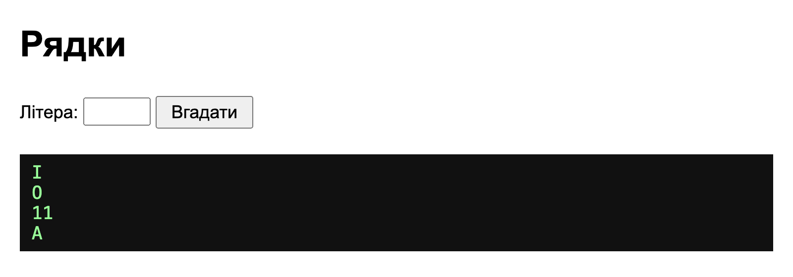

Масив — це список значень під однією назвою, і кожне має номер — індекс, що починається з нуля. Рядок тексту влаштований так само: це масив символів. Тому до кожної літери можна звернутися за індексом, порахувати літери, перевернути слово чи сховати в ньому таємне повідомлення.
const word = "ІНФОРМАТИКА";
| Індекс | 0 | 1 | 2 | 3 | 4 | 5 | 6 | 7 | 8 | 9 | 10 |
|---|---|---|---|---|---|---|---|---|---|---|---|
| Символ | І | Н | Ф | О | Р | М | А | Т | И | К | А |
11 символів, тому індекси від 0 до 10. Пробіл, кома, цифра — теж символи, і в кожного свій індекс.
| Код | Що дає |
|---|---|
word[0] | перший символ: І |
word.length | скільки символів: 11 |
word[word.length - 1] | останній: А |
for (const ch of word) | пройти всі символи по черзі |
word.toLowerCase() | той самий текст малими літерами |
a + b | склеїти два рядки в новий |
Відмінність від масиву: літеру в рядку не можна замінити (word[0] = "Х" нічого не зробить). Новий текст ми збираємо з символів у новий рядок.
show(...) виводить рядок у чорне віконце.ПИШИ СВІЙ КОД ТУТ і ДАЛІ НІЧОГО НЕ ЗМІНЮЙ. Кожен крок — під попереднім.Так виглядає браузер після кроку 1:

const word = "ІНФОРМАТИКА"; show(word[0]); show(word[3]); show(word.length); show(word[word.length - 1]);
Має вийти:
І О 11 А
word[3] — це четверта літера, бо рахуємо з нуля: І(0), Н(1), Ф(2), О(3).
let count = 0;
for (let i = 0; i < word.length; i++) {
if (word[i] === "А") {
count = count + 1;
}
}
show("Літер А: " + count);
let back = "";
for (let i = word.length - 1; i >= 0; i--) {
back = back + word[i];
}
show("Навпаки: " + back);Має вийти:
Літер А: 2 Навпаки: АКИТАМРОФНІ
Перший цикл іде по індексах 0, 1, 2 … 10 і рахує літери «А».
Другий іде з кінця: i = 10, 9 … 0, і доклеює символи до рядка back. Так виходить слово навпаки.
function reverse(text) {
let r = "";
for (const ch of text) {
r = ch + r;
}
return r;
}
function isPalindrome(text) {
const clean = text.toLowerCase().replaceAll(" ", "");
return clean === reverse(clean);
}
show(isPalindrome("радар"));
show(isPalindrome("масив"));
show(isPalindrome("Кит на морі романтик"));
show(isPalindrome("Я несу гусеня"));Має вийти:
true false true true
Паліндром — текст, який однаково читається з обох боків: «радар», «Я несу гусеня».
reverse перевертає текст: кожен символ ставимо на початок нового рядка. isPalindrome робить усі літери малими, прибирає пробіли і порівнює текст із перевернутим.
const msg = "ПкЕоРдЕлРаВмА";
let secret = "";
for (let i = 0; i < msg.length; i = i + 2) {
secret = secret + msg[i];
}
show("Таємне слово: " + secret);Має вийти:
Таємне слово: ПЕРЕРВА
Слово сховане у кожній другій літері: індекси 0, 2, 4 … Тому крок циклу i = i + 2.
Сам (1 бал з 2). Під кодом кроку 4 додай рядок const msg2 = "КщфОюяДжц";. Тут друге слово сховане в кожній третій літері, починаючи з індексу 0. Напиши цикл, який збирає це слово в новий рядок, і виведи його через show.
const hidden = "БРАУЗЕР";
const opened = [];
function mask() {
let m = "";
for (const ch of hidden) {
if (opened.includes(ch)) {
m = m + ch + " ";
} else {
m = m + "_ ";
}
}
return m;
}
show(mask());
document.getElementById("guess").addEventListener("click", function () {
const ch = document.getElementById("letter").value.toUpperCase();
opened.push(ch);
show(ch + ": " + mask());
document.getElementById("letter").value = "";
});Має вийти:
_ _ _ _ _ _ _
Після цього впиши в поле літеру, наприклад Р, і натисни «Вгадати». У віконці з'явиться Р: _ Р _ _ _ _ Р — відкрилися всі літери Р.
opened — масив уже названих літер. mask() проходить слово по символах: якщо літеру вже назвали, показує її, інакше — _. opened.includes(ch) перевіряє, чи є літера в масиві.
Сам (1 бал з 2). Зроби лічильник спроб: створи let tries = 0; і збільшуй його на 1 при кожному натисканні кнопки. Коли в mask() не залишилося жодного _ (перевір через mask().includes("_")), виведи Вгадав за … спроб! з числом спроб.
Пограй з сусідом: заміни слово в hidden на своє (великими літерами), а сусід нехай вгадує.
Кожну літеру замінюємо на ту, що стоїть в абетці на 1 далі: А → Б, К → Л. Абетка — теж рядок, тому номер літери в ній дає ABC.indexOf(ch) (−1, якщо такої немає).
const ABC = "АБВГҐДЕЄЖЗИІЇЙКЛМНОПРСТУФХЦЧШЩЬЮЯ";
Напиши функцію caesar(text, k), яка зсуває кожну літеру на k позицій і повертає новий рядок. Символи, яких немає в абетці (пробіл, кома), залишай як є. Після Я знову йде А — для цього стане в пригоді остача від ділення: (p + k) % ABC.length.
Перевір: show(caesar("КІТ", 1)) має вивести ЛЇУ.
| Що бачиш | Що не так |
|---|---|
Виводить undefined | Індекс за межами: у слові з 11 символів останній має індекс 10, а не 11 |
| Літер А: 0, хоча вони є | У коді латинська «A» замість української «А» — вони виглядають однаково, але це різні символи. Перенабери літеру на українській розкладці |
Identifier 'word' has already been declared | Двічі написали const word. Кожну назву створюємо один раз |
Assignment to constant variable | Змінну const не можна змінити. Для count, back, secret, які ростуть у циклі, — let |
| Навпаки виходить те саме слово | Перевір цикл: має бути i = word.length - 1, i >= 0, i-- |
| Кнопка «Вгадати» нічого не робить | Перевір назви: "guess" і "letter" — малими латинськими літерами, як у файлі |
Впиши відповідь і натисни «Перевірити» або Enter. Великі чи малі літери — неважливо. Перевірити можна лише один раз.
Вивчити, як звернутися до символу рядка за індексом: перший — word[0], останній — word[word.length - 1]. Знайти одне слово або речення-паліндром, якого не було на уроці, і розказати на наступному уроці.